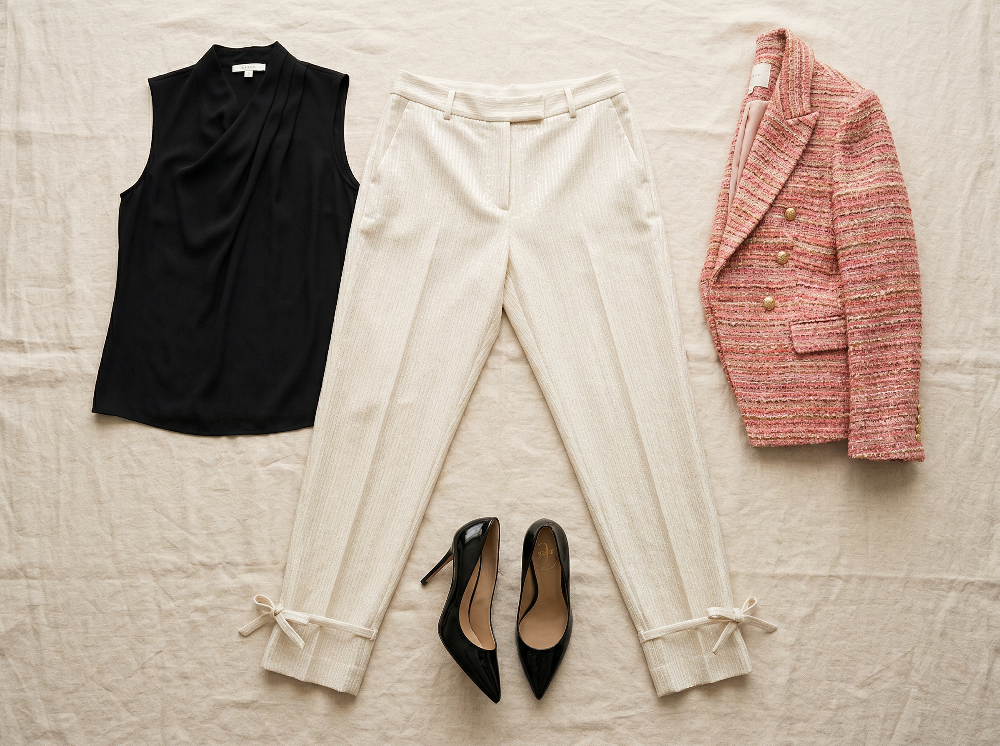

White House Black Market
Sequin Pinstripe Tapered Ankle Pant
$97.50 $130.00
Tapered ankle pant with a subtle sequin pinstripe woven into the fabric — a light shimmer that catches the light without screaming "look at me." The ankle ties add a cool editorial detail that sets these apart from every other work pant on the market. Slimmer fit that shows off your athletic silhouette. Long inseam available.
Shop This ItemWhy This Pick
THIS is the "trendy and fun" pant that proves business casual doesn't have to be boring. The subtle sequin shimmer catches light without being over the top — it reads as texture at first glance, sparkle on second look. The tapered silhouette and ankle ties give editorial vibes that your current wardrobe simply doesn't have. Perfect for when you want to look like the cool exec who doesn't try too hard — because the outfit does the work for you.
Style It With Your Wardrobe
Flat-lay outfit ideas pairing this piece with items you already own

Date Night Meets Boardroom
Sequin pinstripe pant + Black sleeveless Daniel Rainn blouse (#51) + Pink/coral tweed blazer (#215) + Black stiletto pumps (#518). The shimmer in the pants plays off the texture of the tweed blazer while the ecru base keeps it from looking too costume-y. This is the outfit that makes the conference room look up.